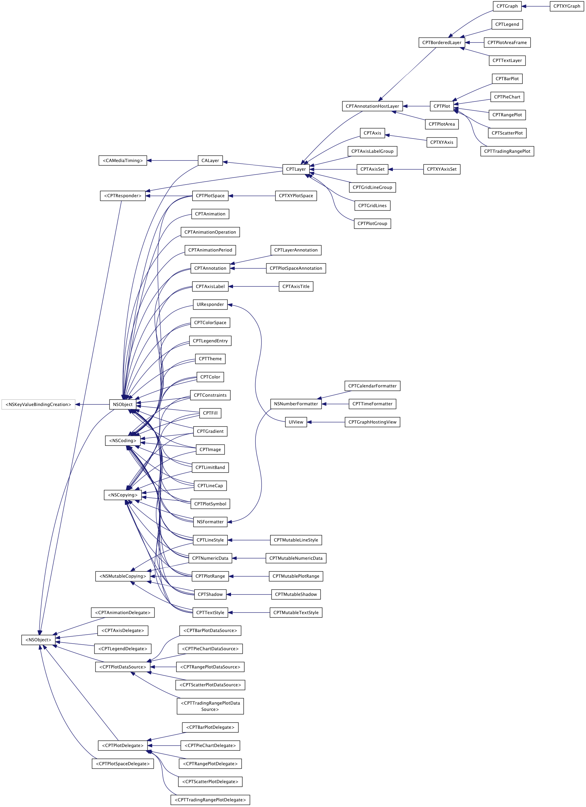

Core Plot (iOS)
Cocoa plotting framework for Mac OS X and iOS
Main Page
Animation & Constants
Classes
Files
Class List
Class Index
Class Hierarchy
Class Members
Class Hierarchy
Go to the textual class hierarchy

Generated by
1.8.2
 1.8.2
1.8.2